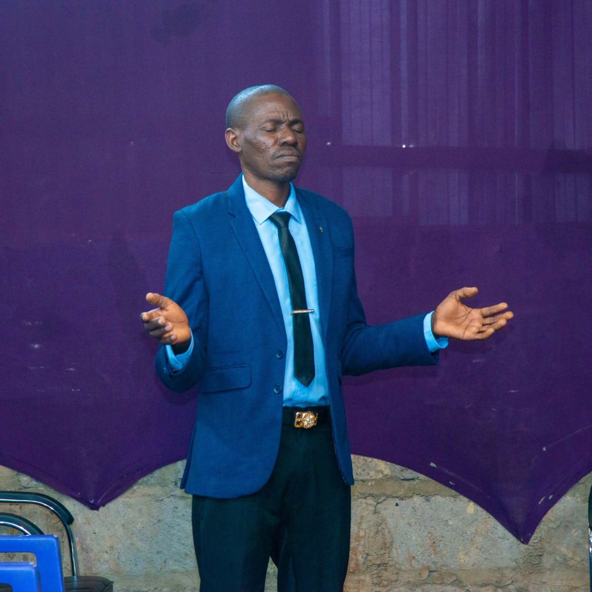
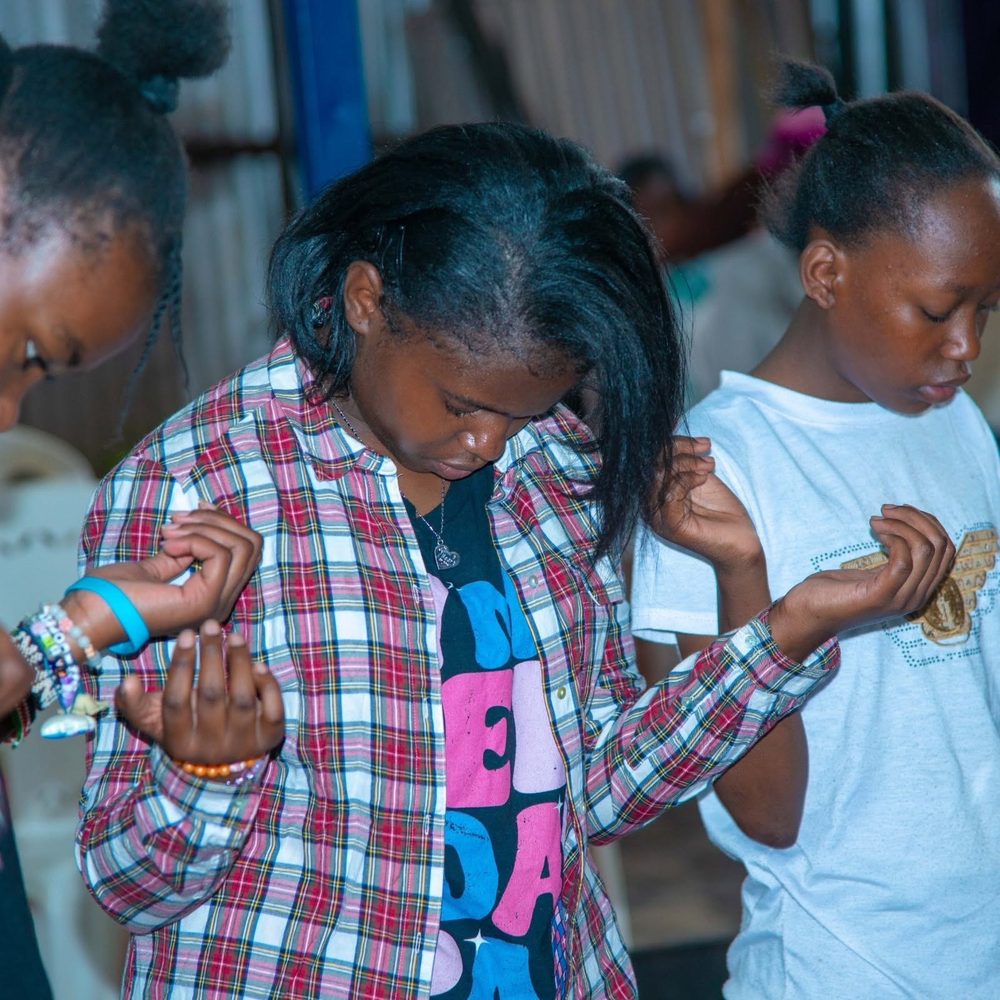
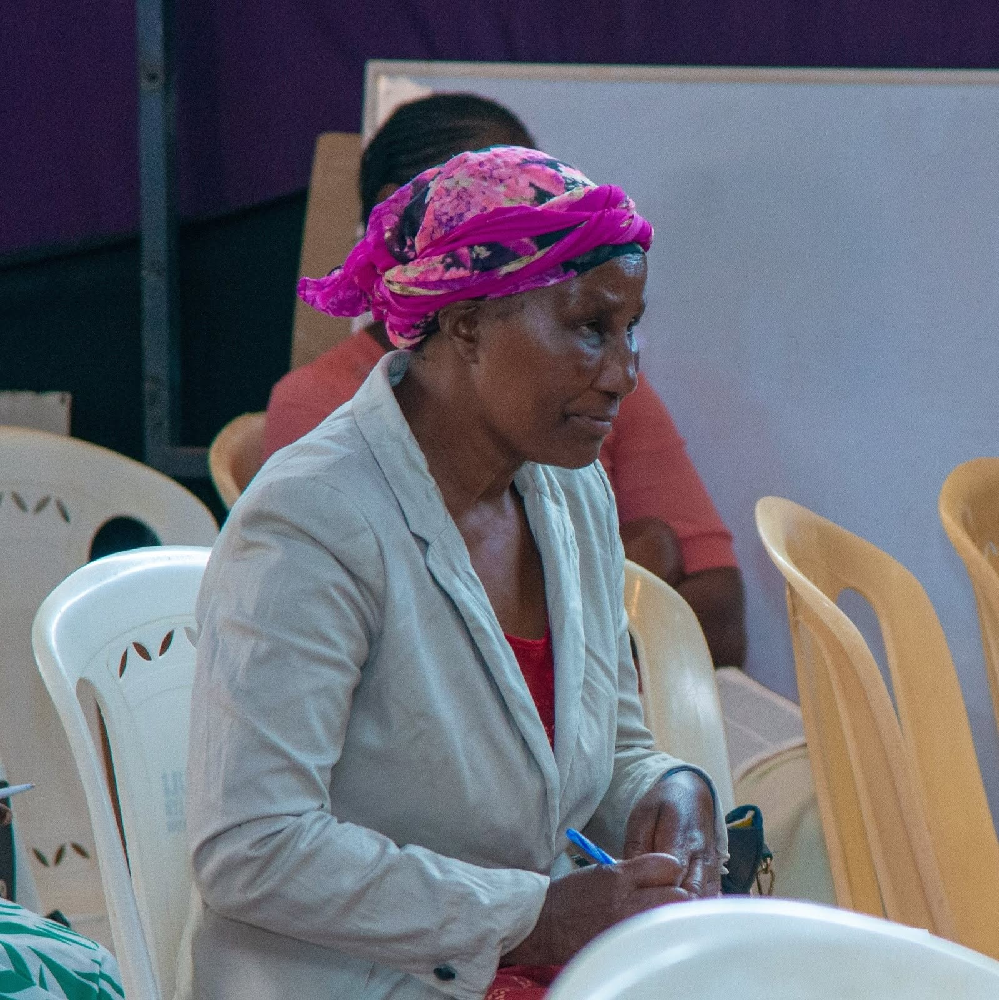

Worship
Gather together to praise and worship God.
A CHURCH WITHOUT ETHNIC BOUNDARIES
We believe in the Word of God, growing in faith, and acknowledging the power of the Holy Spirit. We welcome people without ethnic boundaries and believe in raising winners in life.
Runda / Githogoro, Nairobi, Kenya
Gather together to praise and worship God.
Grow through biblical teaching and discipleship.
Find fellowship, encouragement, and opportunities to serve.

GET TO KNOW US
World of Faith Evangelistic Ministries International is a Christian church community in Runda / Githogoro, Nairobi. We seek to share the Gospel of Jesus Christ, encourage spiritual growth, and serve people with love.
Reaching out, adding value to people, and meeting the needs of the needy as the Holy Spirit leads.
Raising winners in life — 1 John 5:4
Explore our ministries →OUR CHURCH FAMILY
A glimpse of worship, prayer, and learning together as a church family.


OUR LEADERSHIP
Meet the church leadership and learn more about their ministry.
Founder, together with Pastor Evelyn Mungai
Pastor Paul founded World of Faith Evangelistic Ministries International alongside his wife, Pastor Evelyn. Together, they serve the church and its community, sharing the Gospel and reaching out to add value to people and meet the needs of the needy as the Holy Spirit leads.Co-founder, with Pastor Paul Mungai
Pastor Evelyn founded WOFEM alongside her husband, Pastor Paul. Together, they serve the church community and its vision of reaching out, adding value to people, and meeting needs as the Holy Spirit leads.GROW AND SERVE
Discover ways to grow in faith, develop your gifts, and serve others.
Led by Pastor Evelyn Mungai.
Led by Minister Kennedy Oluoch.
Led by Minister Enock Ochieng.
Led by Pastor Evelyn Mungai alongside Elder John.
Led by Pastor Evelyn Mungai.
Led by Pastor Evelyn Mungai.
Led by Pastor Paul Mungai.
Led by Pastor Rose Muinde.
Led by Pastor Rose Muinde.
Led by Minister Enock Ochieng.
BE PART OF IT
Join us for worship, fellowship, prayer, and special gatherings.
📍 Runda / Githogoro, Nairobi
🕒 Service time: Please contact the church to confirm.
📅 Day: Sunday
📍 Venue and schedule are being confirmed.
Visitors, please call the church before attending: 0110007507.
New gatherings will be announced here.
Please confirm event details before making plans.
WATCH & GROW
Make room for the Word of God and share the message of hope.
A message from Minister Kenedy Oluoch.
Watch on Facebook ↗Watch the teaching shared by WOFEM.
Watch on Facebook ↗Join the WOFEM church family for worship and the Word.
Watch on Facebook ↗Videos open on the official WOFEM Facebook page.
REFLECT ON THE WORD
Brief messages to encourage your walk with God.
Difficult moments do not have the final word. Keep trusting God, stay rooted in His Word, and take the next faithful step. Let faith guide your response, even when the way ahead is not clear.
Your kindness, honesty, and willingness to help can point others toward God's love. Look for a practical way to encourage someone today, and let your actions bring glory to God.
When a new challenge feels intimidating, remember that you do not face it alone. Ask God for strength, move forward with courage, and keep doing what is right one step at a time.
OUR FOUNDATION
“For we walk by faith, not by sight.”
2 Corinthians 5:7 (KJV)
WE ARE HERE FOR YOU
Share a prayer request if you feel comfortable. You may leave out sensitive details.
Your request is stored privately for authorized church staff, not posted publicly. Please do not include urgent or highly confidential details.
WE WOULD LOVE TO CONNECT
We look forward to welcoming you into our church community.
Opposite Githogoro Main Stage, Runda View Area, Mbarus Place
Find WOFEM on Google Maps ↗Facebook: World of Faith Evangelistic Ministries page
YouTube: WOFEM TV
TikTok: WOFEM
Contact us by phone or email, or find WOFEM on Facebook, YouTube, and TikTok.